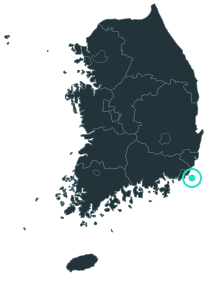

신고만으로는 정확한 위치와 시각을 알 수 없어서, 아래 셋을 함께 계산합니다.
시연은 저장된 해류 예보가 있는 이 지점 한 곳만 계산합니다.

출동 함정·항공대·상황실에 보낼 문구입니다. 복사해서 전달하세요. 전송 연동은 아직 없습니다.
지형: Copernicus DEM GLO-30 (표시용, 해안선 검증 아님). 위치 지도: geoBoundaries ADM1 (CC BY 4.0).